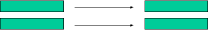
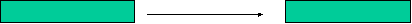
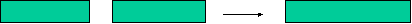

Classical Conditioning to Cure Bed-Wetting
Before Conditioning
During Conditioning
After Conditioning
Alarm (UCS)
Wake up (UCR)
Full
Bladder (NS)
No waking up

Full Bladder (CS)
Wake up (CR)

Full B. (CS)
Wake up (UCR)
Alarm (UCS)